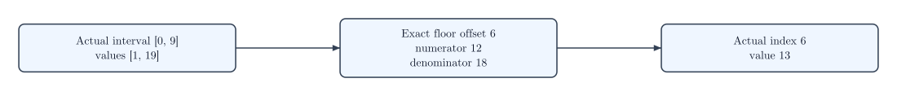
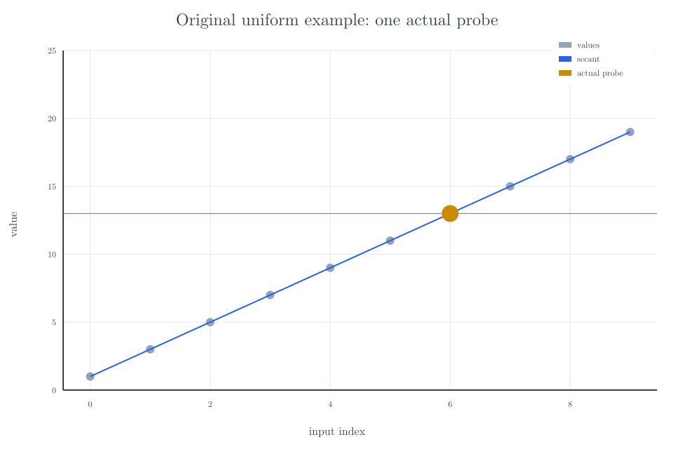
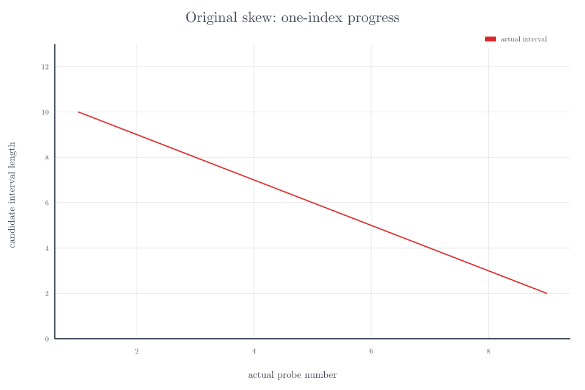
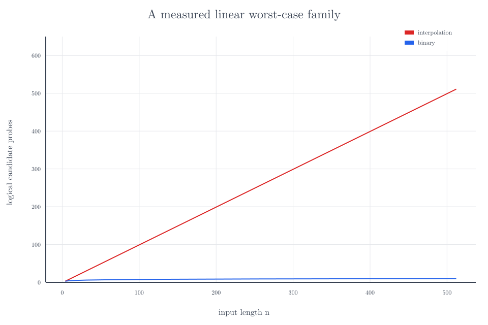

Interpolation Search: Exact Predictions and Actual Probe Histories
Abstract
Find an integer key in a nondecreasing array by predicting its index from the values at the current endpoints. The prediction can be exact for equally spaced values and poor for skewed values. We preserve the original uniform and skewed examples, inspect actual closed intervals, prove progress and exhibit a linear worst-case family. Exact integer arithmetic fixes signed-overflow and floating floor-boundary problems. Logical probes, endpoint tests, distribution assumptions and sortedness preconditions are kept distinct.
Start with a hand-checkable prediction
For [1,3,…,19] and key 13, the interval is [0,9], its endpoint values are one and nineteen, and the exact offset is floor((13−1)·9/(19−1))=6. The first candidate is therefore index six, whose value is thirteen. This deterministic one-probe example is about equal spacing, not an observed random-data average. The diagram uses the actual recorded interval and candidate from the search.
#include <dm/dm.hpp>
int main() {
std::filesystem::create_directories("build");
const auto a = dm::algorithms::interpolation_example_values();
const auto t = dm::algorithms::interpolation_search_trace(a, 13);
const auto &p = t.probes.front();
std::print("| lo | hi | numerator | denominator | exact offset | actual index | actual value |\n| ---: " "| ---: | ---: | ---: | ---: | ---: | ---: |\n| {} | {} | {} | {} | {} | {} | {} |\n",
p.lo, p.hi, p.numerator, p.denominator, p.offset, p.position,
p.value);
std::print("Logical probes {}, endpoint tests {}, candidate tests {}.\n",
t.run.result.probes, t.run.work.endpoint_guards,
t.run.work.key_comparisons);
dm::algorithms::interpolation_probe_diagram(t).save_svg(
"build/interpolation_tiny.svg");
}| lo | hi | numerator | denominator | exact offset | actual index | actual value |
|---|---|---|---|---|---|---|
| 0 | 9 | 12 | 18 | 6 | 6 | 13 |
Logical probes 1, endpoint tests 2, candidate tests 1.

Derive the estimate and the search invariant
For a guarded nonflat interval [lo,hi], solve the line through its endpoint values for the key level, then floor its index displacement:
The guards assert a[lo]≤key≤a[hi]. Thus numerator and denominator are nonnegative, the denominator is positive in the nonflat case, and the offset lies in [0,hi−lo]. The candidate is safe without a floating clamp. If its value is below the key, sortedness excludes every index through pos; otherwise, after an unsuccessful equality test, it excludes every index from pos onward. Updating to pos+1 or pos−1 strictly shrinks the interval, proving termination in at most n logical candidate probes. A successful duplicate is the first encountered candidate, not a promised first or last occurrence.
Equal endpoints require no division: under the guards every value in the sorted interval equals the key, and lo is returned as one logical probe. An out-of-range key can be rejected with zero candidate probes even though endpoints were read. This probe metric is not a physical memory-access or cache-event count.
The old implementation subtracted int values before widening, causing undefined signed overflow on valid extreme inputs. It also used a floating fraction whose rounding could cross a floor boundary. The shared kernel now widens differences before subtraction and computes the product/division exactly. Corrected probe sequences and duplicate choices may differ at those former rounded boundaries. The public function signature and SearchResult field layout are preserved.
Sortedness remains an unchecked precondition. Searching already sorted data uses constant ordinary workspace and no allocation; tracing adds one owned scalar record per actual probe. No O(n) validation prescan is hidden in the search cost. The plotting helper separately validates the complete displayed array.
Preserve all original uniform queries and the secant figure
#include <dm/dm.hpp>
int main() {
std::filesystem::create_directories("build");
const auto a = dm::algorithms::interpolation_example_values();
std::print("| original key | found | index | interpolation probes | binary probes |\n| ---: | --- | " "---: | ---: | ---: |\n");
for (int key : {13, 1, 19, 8, 20}) {
const auto r = dm::algorithms::interpolation_search(a, key);
const auto b = dm::algorithms::binary_search(a, key);
std::print("| {} | {} | {} | {} | {} |\n", key, r.found, r.index,
r.probes, b.probes);
}
const auto t = dm::algorithms::interpolation_search_trace(a, 13);
auto p = dm::algorithms::interpolation_secant_plot(a, 13, t);
p.title("Original uniform example: one actual probe").y_limits(0, 25).save_svg("build/interpolation_original.svg");
}| original key | found | index | interpolation probes | binary probes |
|---|---|---|---|---|
| 13 | true | 6 | 1 | 4 |
| 1 | true | 0 | 1 | 3 |
| 19 | true | 9 | 1 | 4 |
| 8 | false | -1 | 1 | 4 |
| 20 | false | -1 | 0 | 4 |

Preserve the skewed example and expose its intervals
For [1,2,…,9,1000] and key nine, the large final value repeatedly biases the estimate toward lo. The actual search makes nine probes; the canonical binary search makes three. The original uniform key-thirteen query instead takes four binary probes. These are different measured queries, not a universal comparison.
#include <dm/dm.hpp>
int main() {
std::filesystem::create_directories("build");
const auto a = dm::algorithms::interpolation_example_values(true);
const auto t = dm::algorithms::interpolation_search_trace(a, 9);
std::print("| actual probe | lo | hi | candidate | value |\n| ---: | ---: | ---: | ---: | ---: |\n");
std::vector<double> step, width;
for (std::size_t i = 0; i < t.probes.size(); ++i) {
const auto &p = t.probes[i];
std::print("| {} | {} | {} | {} | {} |\n", i + 1, p.lo, p.hi,
p.position, p.value);
step.push_back(i + 1);
width.push_back(p.hi - p.lo + 1);
}
std::print("Interpolation probes {}, binary probes {}.\n",
t.run.result.probes, dm::algorithms::binary_search(a, 9).probes);
auto p = dm::graphics::RPlot::create();
p.line(step, width, "actual interval", {220, 38, 38}, 2).title(
"Original skew: one-index progress").x_label("actual probe number").y_label("candidate interval length").y_limits(0, 13).save_svg("build/interpolation_skew.svg");
}| actual probe | lo | hi | candidate | value |
|---|---|---|---|---|
| 1 | 0 | 9 | 0 | 1 |
| 2 | 1 | 9 | 1 | 2 |
| 3 | 2 | 9 | 2 | 3 |
| 4 | 3 | 9 | 3 | 4 |
| 5 | 4 | 9 | 4 | 5 |
| 6 | 5 | 9 | 5 | 6 |
| 7 | 6 | 9 | 6 | 7 |
| 8 | 7 | 9 | 7 | 8 |
| 9 | 8 | 9 | 8 | 9 |
Interpolation probes 9, binary probes 3.

Worst-case work, distribution assumptions and boundary controls
A scalable missing-key control has n−1 zeros followed by n, and searches for one. For any current lo before the final element, the offset is floor((n−1−lo)/n)=0. The search visits each zero and then rejects the last endpoint: exactly n−1 logical probes. Duplicated low values do not trigger the flat shortcut because the interval's high endpoint differs. This is a deterministic linear-work family.
An expected O(log log n) result instead needs assumptions about the key-value distribution. Equal spacing is an exact special case, and neither that example nor a selected skew establishes an empirical expected-time law. Interpolation arithmetic and extra endpoint accesses also have costs beyond candidate counts; no runtime crossover against binary search is claimed here.
Run/trace policies default to one million complete elements and actual retained probe records each; zero disables either optional cap. The complete element cap precedes reads. Trace admission precedes a candidate read/append, after that iteration's endpoint guards have run. Untraced calls ignore the record cap; legacy calls disable optional caps. Counters and index length are checked, and errors return no partial trace. The borrowed array, scalar result/work, vector capacity and byte/peak RAM are excluded from the record cap.
#include <dm/dm.hpp>
int main() {
std::filesystem::create_directories("build");
std::vector<double> sizes, linear, binary;
std::print("| n | absent-key interpolation probes | binary probes |\n| ---: | ---: | ---: |\n");
for (std::size_t n : {4, 8, 16, 32, 64, 128, 256, 512}) {
const auto a = dm::algorithms::interpolation_adversary(n);
const auto r = dm::algorithms::interpolation_search(a, 1);
const auto b = dm::algorithms::binary_search(a, 1);
if (r.found || r.probes != n - 1)
throw std::runtime_error("linear family");
std::print("| {} | {} | {} |\n", n, r.probes, b.probes);
sizes.push_back(n);
linear.push_back(r.probes);
binary.push_back(b.probes);
}
const std::vector<int> wide{std::numeric_limits<int>::min(), -1, 0, 1,
std::numeric_limits<int>::max()};
for (int key : wide) {
const auto r = dm::algorithms::interpolation_search(wide, key);
if (!r.found || wide[r.index] != key)
throw std::runtime_error("signed range");
}
std::print("All five full-signed-range targets verified.\n");
const auto flat = dm::algorithms::interpolation_search_trace({2, 2, 2}, 2);
std::print("Flat range: {} logical probe, {} candidate tests, first index {}.\n",
flat.run.result.probes, flat.run.work.key_comparisons,
flat.run.result.index);
const auto skew = dm::algorithms::interpolation_example_values(true);
(void) dm::algorithms::interpolation_search_trace(skew, 9, {10, 9});
try {
(void) dm::algorithms::interpolation_search_trace(skew, 9, {10, 8});
throw std::runtime_error("cap accepted");
} catch (const std::length_error &) {
std::print("Exact nine-record cap admitted; cap eight rejected.\n");
}
auto p = dm::graphics::RPlot::create();
p.line(sizes, linear, "interpolation", {220, 38, 38}, 2).line(sizes, binary,
"binary",
{37, 99, 235},
2).title(
"A measured linear worst-case family").x_label("input length n").y_label("logical candidate probes").y_limits(0, 650).save_svg("build/interpolation_controls.svg");
}| n | absent-key interpolation probes | binary probes |
|---|---|---|
| 4 | 3 | 3 |
| 8 | 7 | 4 |
| 16 | 15 | 5 |
| 32 | 31 | 6 |
| 64 | 63 | 7 |
| 128 | 127 | 8 |
| 256 | 255 | 9 |
| 512 | 511 | 10 |
All five full-signed-range targets verified. Flat range: 1 logical probe, 0 candidate tests, first index 0. Exact nine-record cap admitted; cap eight rejected.

Validation and reference
Native sanitizer checks compare sorted multisets and random arrays with independent binary-search membership and exact widened candidate arithmetic, inspecting every captured bound, value and selected counter. Full signed extremes, flat/outside queries, original probes, ownership and complete/one-short budgets are checked. Existing sorted-search and Eytzinger consumers pass. Helpers validate complete fixture/display admission and bind displayed candidates to their actual sources.
NIST's interpolation-search entry describes the uniform-distribution expectation and linear worst case, and cites Yehoshua Perl, Alon Itai and Haim Avni, Interpolation search—a log logN search, Communications of the ACM 21(7), 550–553, July 1978. This report's finite-int implementation uses exact flooring, logical candidate counters and an unchecked sorted-input contract. It does not claim that arbitrary almost-uniform arrays satisfy a probabilistic theorem, or that arithmetic safety guarantees fewer probes.
Independent Python Fraction checks verify 3498 cases and 3537 actual probe records, including every selected counter and full signed extremes. Frozen safe legacy cases preserve membership; 0 probe-count or duplicate-choice differences occur among 3491 comparisons, consistent with the documented exact-floor correction. Fresh coverage checks pass 37 definitions, 12 compiled public examples and four clangd hovers.